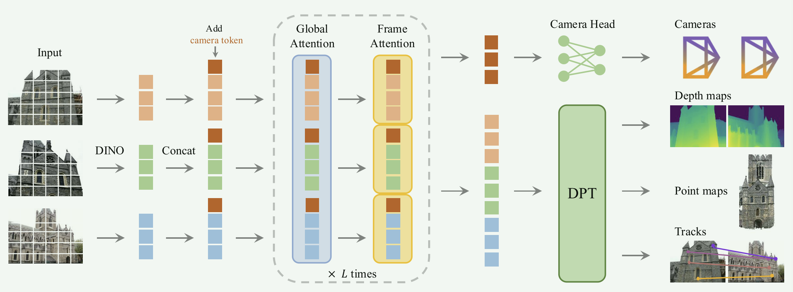

[toc]
pipeline

image - DINO得到 image token(tI) - 加上 camera 和 register 得到完整 token( tI, g, R) -
[ global attention（关注所有帧token集合 tI, g, R ）- frame self attention（关注每一帧 k 的内部token tkI, g, R ） ]-
输出 (t̂iI,t̂ig,t̂iR)i = 1N ，其中 t̂iI, t̂ig 用于预测，经过Camera Head + DPT 得到 3D attributes 。
摘要
提出VGGT，能干什么，有什么作用or影响。效率、结果（sota）、对下游任务增强
1. 引言
3d参数估计-sfm不行-vggsfm也不行-端到端的网络-dust3r/mast3r不行（一次只能处理两张&依赖后处理）-文章提出vggt。
VGGT：任意图片&少后处理（不用后处理也可以比之前的优化方案表现好）
无需额外假设，通用性强，适用诸多下游任务；整体预测参数可以更加准确；
总结贡献：
- VGGT，feed forward，任意数量图片，几秒内预测所有关键三维参数
- 预测参数直接可用，比现有的基于缓慢后处理优化的效果好（dust3r系列）
- 加上BA后处理效果更好
2. 相关工作
SfM：是什么？怎么做？传统如何？现在关注的两个领域：keypoint detection & image matching. VGGSfM好了一点，但VGGT更好。
MVS：下定义，前置要求：已知pose，一般从SfM得到。分三类：handcrafted，global optimization，learning。本文讲learning，所以从learning方面分析：dust3r/mast3r有进展，但VGGT更好。
TAP(Tracking Any Point)：下定义：给视频和query points，预测这些点在其他帧的对应关系。TAP-Vid，TAPIR，TAPTR都是专一的point tracker，VGGT+point tracker效果更好。
3. 方法
对任何一个模型，都应该先讲它的输入和输出是什么。然后再介绍各个模块。
模型定义： f((Ii)i = 1N) = (gi,Di,Pi,Ti)i = 1N
| 符号 | 含义 |
|---|---|
| gi = [q,t,f] ∈ ℝ9 | 相机内外参(q ∈ ℝ4,t ∈ ℝ3,f ∈ ℝ2) |
| Di ∈ ℝH × W | 第i张图像深度图 |
| Pi ∈ ℝ3 × H × W | point map，每个像素反投影到三维空间的坐标 |
| Ti ∈ ℝC × H × W | 特征图，每个像素提取的 C 维点级特征 |
类似dust3r，第一帧相机是世界坐标系。除第一张图像需要作为参考帧，其他图像的输入顺序不影响预测结果。
Keypoint Tracking：
给一张查询图像 Iq 中的某个查询点 yq，输出该点在所有图像 Ii 中的2D位置轨迹： 𝒯⋆(yq) = (yi)i = 1N, yi ∈ ℝ2 transformer不直接输出轨迹，而是预测用于跟踪的稠密特征图 Ti ∈ ℝC × H × W，然后用track模块得到轨迹，输入查询点 yj 与特征 Ti，输出轨迹 $\hat{\mathbf{y}}_{j,i}$ ： $$ \mathcal{T}\left( (\mathbf{y}_j)_{j=1}^M, (T_i)_{i=1}^N \right) = \left( (\hat{\mathbf{y}}_{j,i})_{i=1}^N \right)_{j=1}^M $$
Over-complete Predictions：
深度图可以由point map和相机参数得到，但是训练时显式预测深度仍然会带来更好的效果。
冗余预测实际上提供了更强的监督信号。
利用信息冗余换取预测稳定。
特征提取：
交替通过帧内自注意力层和全局注意力层（L=24）。
预测：
所有输出都在第一帧相机 g1 的坐标系中表示。g1 外参被设定为单位矩阵：q1 = [0,0,0,1], t1 = [0,0,0]。
camera head 从 t̂ig 中预测相机参数 ĝi，四层self attention。
t̂iI 预测稠密输出 Di, Pi, Ti。 t̂iI 通过 DPT 层转换为稠密特征图 Fi ∈ ℝC’ × H × W。每个 Fi 通过 3 × 3 的卷积层生成对应的Di, Pi。DPT 还输出稠密的跟踪特征 Ti ∈ ℝC × H × W，作为 track 输入。
同时输出 Di, Pi 的不确定性 $ \Sigma^D_i, \Sigma^P_i$ 。
Tracking：
采用 CoTracker2；
输入 query points ，在其特征图中采样特征，与其它帧相关性匹配；
输出所有帧中与该点对应的2D坐标 ŷi。
训练： ℒ = ℒcamera + ℒdepth + ℒpmap + λℒtrack
相机损失：$\mathcal{L}_{\text{camera}} = \sum_{i=1}^{N} \| \hat{\mathbf{g}}_i - \mathbf{g}_i \|_{\epsilon}$
使用 Huber 损失监督预测相机参数 $\hat{\mathbf{g}}_i$ 与真值 gi 误差。
深度损失：$\mathcal{L}_{\text{depth}} = \sum_{i=1}^{N} \| \Sigma_i^D \odot (\hat{D}_i - D_i) \| + \| \Sigma_i^D \odot (\nabla \hat{D}_i - \nabla D_i) \| - \alpha \log \Sigma_i^D$
包含预测深度与 GT 深度差；梯度差（解决尺度漂移）；不确定性回归项。
点图损失（与深度类似）：$\mathcal{L}_{\text{pmap}} = \sum_{i=1}^{N} \| \Sigma_i^P \odot (\hat{P}_i - P_i) \| + \| \Sigma_i^P \odot (\nabla \hat{P}_i - \nabla P_i) \| - \alpha \log \Sigma_i^P$
Tracking 损失：$\mathcal{L}_{\text{track}} = \sum_{j=1}^{M} \sum_{i=1}^{N} \| \mathbf{y}_{j,i} - \hat{\mathbf{y}}_{j,i} \|$
其中 yj, i 是第 j 个查询点在第 i 张图像中的 GT 对应点，$\hat{\mathbf{y}}_{j,i}$ 为tracking 预测的对应点。
4. 局限
- 不支持鱼眼/全景相机
- 大旋转（>90度）场景下性能下降
- 强非刚性形变处理不足
补充
a. inductive bias
加给模型的假设。
为做好重建，之前的模型会在结构里人工加入很多关于世界的先验规则（inductive bias）。
NeRF：假设空间中任何点可以被连续建模，体积渲染积分
MVSnet：视差+cost volume